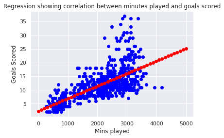

Data Science Project Page
Joe Williams | Student ID: 2038165
Task 1
The English Premiership and GNI in the UK
The first chart looks at whether there is a home advantage in the Premiership and the second chart looks at Gross National Income in the UK between 2005 and 2022
Task 2
IMF Lending Outstanding
The first chart is a replication of the Financial Times graph and the second chart is an improvement on the first as it looks at IMF Credit Outstanding as a percentage of World GDP.
From looking at the second graph, one would argue that the most risky year is infact 1984 as this year has the highest Credit Outstanding as a percentage of GDP.
Task 3
Covid-19 Cases
The two charts show UK Covid-19 cases using two different visual encodings. The first is a line, while the second is a bar chart. I chose to use the second visual encoding as it shows through the bars the large extent of the peaks of the data.
Task 4
Premier League Goalscorers
This chart is of the top Premier League goalscorers, obtained by scraping using the code found here
I chose this website as i knew that it would have many tables on it and hence would have a good opportunity to scrape these tables
Task 5
Employment Rate in the UK
| | ||
| | ||
| |
These are nine charts created using an API loop to efficiently produce simliar charts all looking at the the employment rate in the UK. The code for the API used can be found here
Task 6
Bristol Chloropeths
This task was to produce two maps. The first shows Bristol divided into the different wards it contains. The second extends this by adding the overall crime by each ward. There was some missing data as some of the wards shown in the first graph were not in the crime data.
Task 7
The Festival of Economics
The task was to support or refute an argument from the Festival of Economics.
During the Big Data talk many of the panelists debated the ethics of data sharing and
the extents to which data sharing should be used.
The Graphs show that people are willing for their data to be shared in general, however there is a
strong feeling that there must be transparency in the ways the data is shared.
Task 8
Advanced Charts
This task was to create two advanced charts.
The two I created were a bubble plot of premier league scorers
and a scatter plot of Highstreet Recovery in the UK
Task 9
Machine Learning

This task was to create two charts through machine learning. The code to the colab notebook can be found here
The first chart examines the correlation between minutes played and goals scored across europes top 5 leagues.
The results show that the more minutes played does increase goals scored however there seems to be other factors that also influence this.
The second chart looks at the distance of online and instore firms created using yahoo finance data and the clustering format that was introduced during tutorials. The results show that apart from alibaba and GAP
the online and instore firms are very closely clustered together.